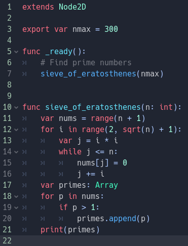

Devlog #2: Logika Pergerakan GDScript Berbasis Grid

Minggu ini saya fokus pada logika pergerakan pemain (player movement) di Godot Engine. Mengingat game ini berfokus pada aktivitas bertani yang presisi, pergerakan bebas (free movement) terasa kurang pas.
Saya memutuskan menggunakan sistem pergerakan berbasis grid (Grid-based movement). Saat pemain menekan tombol arah, karakter akan mengunci target koordinat tile selanjutnya dan berjalan ke sana dengan fungsi interpolasi agar gerakannya terlihat mulus (smooth).
Kode GDScript yang mengatur ini sangat sederhana berkat fungsi bawaan Vector2D di Godot. Langkah selanjutnya adalah menambahkan logika tabrakan (collision) agar pemain tidak menembus pohon atau pagar.
« Kembali ke Beranda